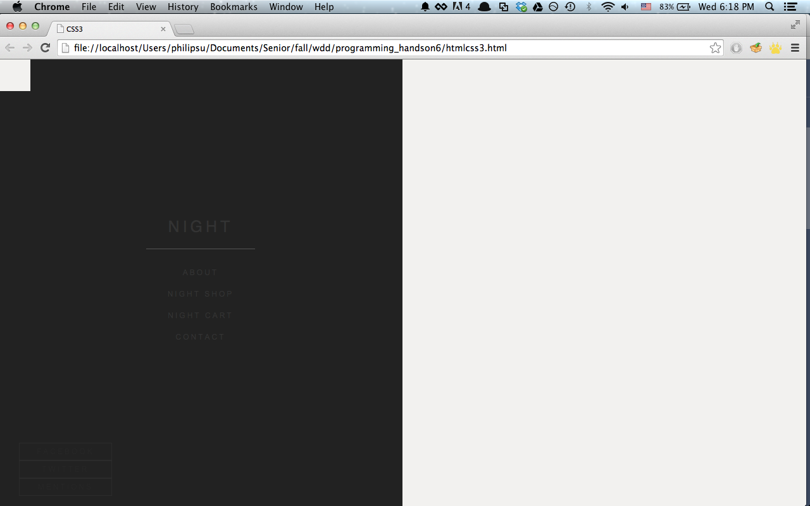

Before we begin, make sure you have the starter code. You should see index.html and style.css. If not, copy the code here. Open both in your text editor. You should see something like this:
Here's our goal: To shift the Night div to the right side, give unique styles to Day and Night, fix our Social Media buttons, and move the top-left white square to the center (and make it look like an arrow). When we are done, hovering over the Night panel will animate the panel and stretch it across the screen.
First, let's fix #night. Notice it is already a position:fixed element. Any non-static position will allow us to use offset values, like top, right, bottom, and left. Add right:0 to styles. Now, if you refresh your page, it should look like this:
Next, let's fix the ugly white box at the top-left corner of night. Let's turn it into an arrow. First find #night #arrow and add the following CSS properties:
#night #arrow {
...
background-color: #222;
transform: rotate(45deg);
-moz-transform: rotate(45deg);
-webkit-transform: rotate(45deg);
}

Notice our box is rotated and positioned at the top. Also, notice that the box takes up space, causing our Night panel to be positioned slightly lower than the Day panel. This fix requires us to use position: absolute to pull the rotated box out of the flow of the page, and then shifting this box in relation to the Night panel. Because the Night panel
is already position: fixed, if the rotated box (within the Night panel) is position: absolute, it will move relative to the Night panel.
Thus, let's add the following styles to #night #arrow:
#night #arrow {
...
position: absolute;
top: 50%;
margin-left: -25px;
margin-top: -25px;
}
Why did we shift the box down 50% from the top, and shift it more with margins?
Shifting the rotated box down 50% only aligns the top of the rotated box to 50% the height of the Night panel. It does not shift the center of the rotated box to 50%. So, we must shift the box half of its height and width (to the top and left) to center the box. This is how you would center a div vertically on the page.
Thus, we get this:
Notice that the social media buttons are stacked vertically. Let's make them inline with each other. I'll use display: inline-block;. Floating left also works.
Remember that with display: inline-block, our Social Media buttons will be beside each other, except there is a slight gap between each item. This is because div elements always add a bit of margin above and below elements (or in the case of inline-blocks, to the left and right of elements). Floats will not have this problem (but we won't use floats for this example, since we want our menu centered).
Find .social .item in the CSS stylesheet, and let's first add the inline-block property, as well as a fix for the menu gap problem:
.social .item {
...
display: inline-block;
margin-left: -5px;
}
Wonderful! Our page is looking much nicer. Except...what is up with Night panel's text color?
Notice that in the CSS file, Day and Night both share similar elements in the same classes.
However, both panels won't have similar text color. In order to fix this, first put all similar styles for the class, and then style individual css rules to override the common ones.
So, find #night and add color: white;
Nice. Night now stands out.
Next, we will apply CSS3 styles to make our elements look slick. First, let's dim down the opacity of the menu items, and as we hover over each item, we will change the opacity to 1. This will give it a nice, subtle effect to your page.
Find #day .menu .item and add opacity: 0.4;
Same for Night. Find #night .menu .item and add opacity: 0.2;
Although both menus have the same structure, we made the Night panel have a fainter text color than Day purely because it looks nicer on black.
Next, find #day .menu .item:hover, #night .menu .item:hover, and add opacity: 1;
This hover effect will affect both Day and Night, because of the comma separating the two styles. If you now open up css3.html, and hover over the menu items, you will see a nice opacity change.
However, the change from opacity 0.4 or 0.2 to 1 is so sudden. To smoothen out the transition, let's add the CSS3 property transition, which applies to .menu .item (since this transition affects both Day and Night) Find .menu .item, and add the trio of styles for transition:
.menu .item {
...
transition: 0.3s;
-moz-transition: 0.3s;
-webkit-transition: 0.3s;
}
Last, let's add the hover effect on the Night panel. If you hover over the Night panel, its width should be 97%. Find #night:hover and add width: 97%;
And again, to smoothen the transition, let's add the styles for transition under the #night element:
#night {
...
transition: 0.7s;
-moz-transition: 0.7s;
-webkit-transition: 0.7s;
}
And there you go! :)